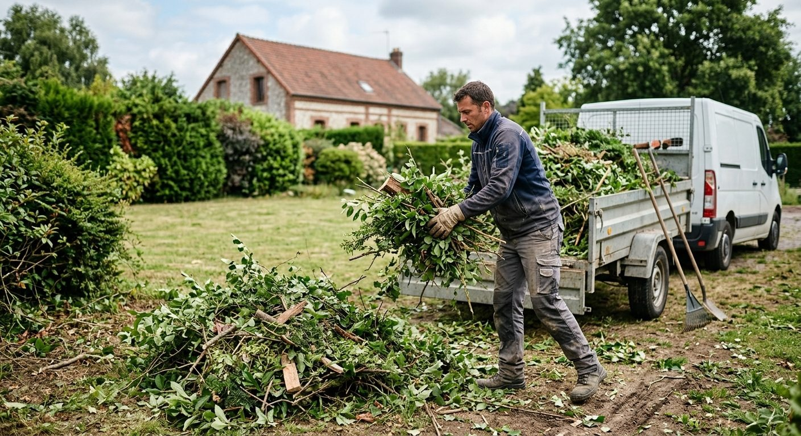
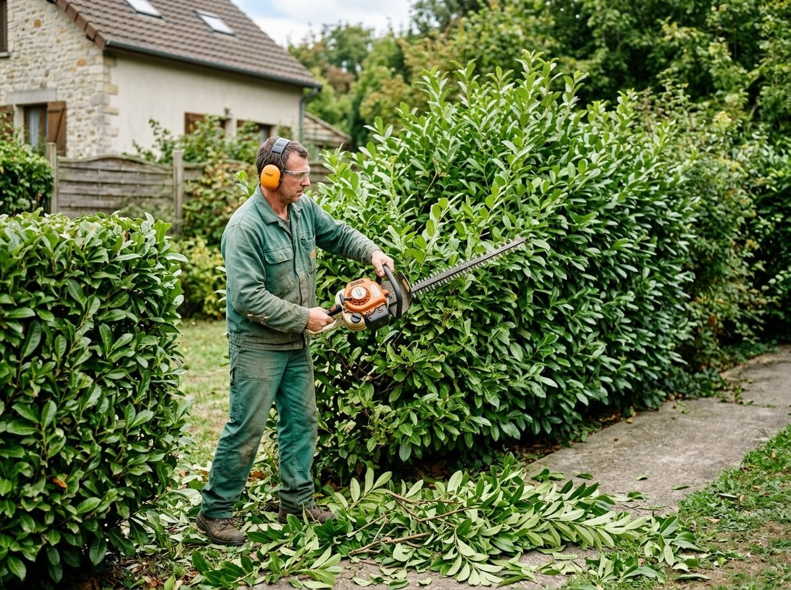

Création d'espaces verts
Un jardin se pense avant de se planter. Pelouse, massifs, allées et bordures sont organisés pour s'accorder à la maison et à la façon dont vous vivez dehors.
Prestations
De la création du jardin à son entretien au fil des saisons, A.R Paysage intervient aux différentes étapes.



Aménager
Les travaux qui donnent au jardin sa structure : le dessin, la terre, les premières plantations.
Un jardin se pense avant de se planter. Pelouse, massifs, allées et bordures sont organisés pour s'accorder à la maison et à la façon dont vous vivez dehors.
Arbustes, vivaces et haies sont installés à leur place, dans une terre préparée, pour bien démarrer et s'épanouir au fil des saisons.
Décaissement, remblai et modelage du terrain : la base indispensable avant de semer, de planter ou d'aménager.

Un sol aplani et affiné au râteau, prêt à recevoir une pelouse ou de nouvelles plantations.
Entretenir
Les gestes réguliers qui gardent la pelouse, les haies et les massifs en ordre.

Des passages réguliers pour une pelouse nette, au rythme de la pousse.

Haies taillées à la bonne hauteur, au bon moment, pour rester denses et propres.

Massifs et allées gravillonnées débarrassés des mauvaises herbes.

Pelouse, massifs et allées dégagés des feuilles tombées à l'automne.
Tailles, tontes et feuilles chargées et emportées une fois le travail terminé.
Un projet de jardin ?
A.R Paysage répond aux particuliers du Val-Saint-Germain et des environs.
06 99 20 18 49